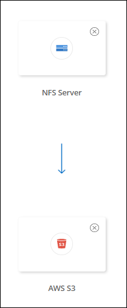

Note di rilascio
Note di rilascio
Creare relazioni di sincronizzazione
 Suggerisci modifiche
Suggerisci modifiche
Quando si crea una relazione di sincronizzazione, il servizio di copia e sincronizzazione BlueXP copia i file dall'origine alla destinazione. Dopo la copia iniziale, il servizio sincronizza tutti i dati modificati ogni 24 ore.
Prima di creare alcuni tipi di relazioni di sincronizzazione, è necessario creare un ambiente di lavoro in BlueXP.
Creare relazioni di sincronizzazione per specifici tipi di ambienti di lavoro
Se si desidera creare relazioni di sincronizzazione per uno dei seguenti elementi, è necessario innanzitutto creare o individuare l'ambiente di lavoro:
-
Amazon FSX per ONTAP
-
Azure NetApp Files
-
Cloud Volumes ONTAP
-
Cluster ONTAP on-premise
-
Creare o scoprire l'ambiente di lavoro.
-
Selezionare Canvas.
-
Selezionare un ambiente di lavoro che corrisponda a uno dei tipi elencati sopra.
-
Selezionare il menu delle azioni accanto a Sincronizza.

-
Selezionare Sincronizza dati da questa posizione o Sincronizza dati in questa posizione e seguire le istruzioni per impostare la relazione di sincronizzazione.
Creare altri tipi di relazioni di sincronizzazione
Utilizzare questa procedura per sincronizzare i dati da o verso un tipo di storage supportato diverso da Amazon FSX per cluster ONTAP, Azure NetApp Files, Cloud Volumes ONTAP o ONTAP on-premise. I passaggi riportati di seguito forniscono un esempio che mostra come impostare una relazione di sincronizzazione da un server NFS a un bucket S3.
-
In BlueXP, selezionare Sync.
-
Nella pagina Definisci relazione di sincronizzazione, scegliere un'origine e una destinazione.
I passaggi seguenti forniscono un esempio di come creare una relazione di sincronizzazione da un server NFS a un bucket S3.

-
Nella pagina NFS Server, inserire l'indirizzo IP o il nome di dominio completo del server NFS che si desidera sincronizzare con AWS.
-
Nella pagina Data Broker Group, seguire le istruzioni per creare una macchina virtuale per broker di dati in AWS, Azure o Google Cloud Platform, oppure per installare il software per broker di dati su un host Linux esistente.
Per ulteriori informazioni, consultare le seguenti pagine:
-
Dopo aver installato il data broker, selezionare continua.

-
nella pagina Directory, selezionare una directory o una sottodirectory di livello superiore.
Se BlueXP copy and Sync non riesce a recuperare le esportazioni, selezionare Add Export Manually (Aggiungi esportazione manualmente) e inserire il nome di un'esportazione NFS.

Se si desidera sincronizzare più di una directory sul server NFS, è necessario creare ulteriori relazioni di sincronizzazione al termine dell'operazione. -
Nella pagina bucket AWS S3, selezionare un bucket:
-
Eseguire il drill-down per selezionare una cartella esistente all'interno del bucket o per selezionare una nuova cartella creata all'interno del bucket.
-
Selezionare Aggiungi all'elenco per selezionare un bucket S3 non associato all'account AWS. "Al bucket S3 devono essere applicate autorizzazioni specifiche".
-
-
Nella pagina Bucket Setup, impostare il bucket:
-
Scegliere se attivare la crittografia del bucket S3, quindi selezionare una chiave AWS KMS, immettere l'ARN di una chiave KMS o selezionare la crittografia AES-256.
-
Selezionare una classe di storage S3. "Visualizzare le classi di storage supportate".

-
-
nella pagina Impostazioni, definire come i file e le cartelle di origine vengono sincronizzati e mantenuti nella posizione di destinazione:
- Pianificazione
-
Scegliere una pianificazione ricorrente per le sincronizzazioni future o disattivare la pianificazione della sincronizzazione. È possibile pianificare una relazione per sincronizzare i dati ogni 1 minuto.
- Timeout di sincronizzazione
-
Definire se la copia e la sincronizzazione di BlueXP devono annullare una sincronizzazione dei dati se la sincronizzazione non è stata completata nel numero specificato di minuti, ore o giorni.
- Notifiche
-
Consente di scegliere se ricevere notifiche di copia e sincronizzazione BlueXP nel Centro notifiche di BlueXP. È possibile attivare le notifiche per la sincronizzazione dei dati riuscita, per la sincronizzazione dei dati non riuscita e per la sincronizzazione dei dati annullata.
- Tentativi
-
Definire il numero di tentativi di copia e sincronizzazione di BlueXP per sincronizzare un file prima di ignorarlo.
- Sincronizzazione continua
-
Dopo la sincronizzazione iniziale dei dati, BlueXP Copy and Sync ascolta le modifiche apportate al bucket S3 di origine o al bucket Google Cloud Storage e sincronizza continuamente le modifiche apportate al target nel momento in cui si verificano. Non è necessario eseguire una nuova scansione dell'origine a intervalli pianificati.
Questa impostazione è disponibile solo quando si crea una relazione di sincronizzazione e si sincronizzano i dati da un bucket S3 o Google Cloud Storage allo storage Azure Blob, CIFS, Google Cloud Storage, IBM Cloud Object Storage, NFS, S3, E StorageGRID * o* dallo storage Azure Blob allo storage Azure Blob, CIFS, Google Cloud Storage, IBM Cloud Object Storage, NFS e StorageGRID.
Se si attiva questa impostazione, questa influisce sulle altre funzioni nel modo seguente:
-
La pianificazione della sincronizzazione è disattivata.
-
Vengono ripristinati i valori predefiniti delle seguenti impostazioni: Timeout di sincronizzazione, file modificati di recente e Data di modifica.
-
Se S3 è l'origine, il filtro per dimensione sarà attivo solo per gli eventi di copia (non per gli eventi di eliminazione).
-
Una volta creata la relazione, è possibile solo accelerare o eliminare la relazione. Non è possibile interrompere le sincronizzazioni, modificare le impostazioni o visualizzare i report.
È possibile creare una relazione di sincronizzazione continua con un bucket esterno. A tale scopo, attenersi alla seguente procedura:
-
Vai alla console di Google Cloud per il progetto del bucket esterno.
-
Accedere a archiviazione cloud > Impostazioni > account del servizio archiviazione cloud.
-
Aggiornare il file local.json:
{ "protocols": { "gcp": { "storage-account-email": <storage account email> } } } -
Riavviare il data broker:
-
sudo pm2 stop all
-
sudo pm2 avvia tutto
-
-
Creare una relazione di sincronizzazione continua con il bucket esterno pertinente.
Un broker di dati utilizzato per creare un rapporto di sincronizzazione continua con un bucket esterno non sarà in grado di creare un'altra relazione di sincronizzazione continua con un bucket nel progetto.
-
-
- Confronta per
-
Scegliere se la copia e la sincronizzazione di BlueXP devono confrontare determinati attributi quando si determina se un file o una directory è stata modificata e deve essere nuovamente sincronizzata.
Anche se si deselezionano questi attributi, BlueXP copy and Sync confronta ancora l'origine con la destinazione controllando i percorsi, le dimensioni dei file e i nomi dei file. In caso di modifiche, i file e le directory vengono sincronizzati.
È possibile scegliere di attivare o disattivare la copia e la sincronizzazione BlueXP confrontando i seguenti attributi:
-
Mtime: L'ora dell'ultima modifica di un file. Questo attributo non è valido per le directory.
-
Uid, gid e mode: Flag di autorizzazione per Linux.
-
- Copia per gli oggetti
-
Attivare questa opzione per copiare tag e metadati dello storage a oggetti. Se un utente modifica i metadati sull'origine, BlueXP copia e sincronizza questo oggetto nella sincronizzazione successiva, ma se un utente modifica i tag sull'origine (e non i dati stessi), BlueXP copia e sincronizza l'oggetto nella sincronizzazione successiva.
Non è possibile modificare questa opzione dopo aver creato la relazione.
La copia dei tag è supportata con relazioni di sincronizzazione che includono Azure Blob o un endpoint compatibile con S3 (S3, StorageGRID o IBM Cloud Object Storage) come destinazione.
La copia dei metadati è supportata con relazioni "cloud-to-cloud" tra uno dei seguenti endpoint:
-
AWS S3
-
Azure Blob
-
Storage Google Cloud
-
Storage a oggetti IBM Cloud
-
StorageGRID
-
- File modificati di recente
-
Scegliere di escludere i file modificati di recente prima della sincronizzazione pianificata.
- Elimina file in origine
-
Scegliere di eliminare i file dalla posizione di origine dopo che BlueXP copia e Sync copia i file nella posizione di destinazione. Questa opzione include il rischio di perdita dei dati perché i file di origine vengono cancellati dopo la copia.
Se si attiva questa opzione, è necessario modificare anche un parametro nel file local.json sul data broker. Aprire il file e aggiornarlo come segue:
{ "workers":{ "transferrer":{ "delete-on-source": true } } }Dopo aver aggiornato il file local.json, è necessario riavviare:
pm2 restart all. - Eliminare i file di destinazione
-
Scegliere di eliminare i file dalla posizione di destinazione, se sono stati eliminati dall'origine. Per impostazione predefinita, i file non vengono mai eliminati dalla posizione di destinazione.
- Tipi di file
-
Definire i tipi di file da includere in ogni sincronizzazione: File, directory, collegamenti simbolici e collegamenti hardware.
I collegamenti hardware sono disponibili solo per le relazioni NFS-NFS non protette. Gli utenti saranno limitati a un processo scanner e a una concorrenza scanner e le scansioni devono essere eseguite da una directory principale. - Escludi estensioni file
-
Specificare il regex o le estensioni del file da escludere dalla sincronizzazione digitando l'estensione del file e premendo Invio. Ad esempio, digitare log o .log per escludere i file *.log. Non è necessario un separatore per più interni. Il seguente video fornisce una breve demo:
Le espressioni regex, o regolari, differiscono dai caratteri jolly o dalle espressioni glob. Questa caratteristica only funziona con regex. - Escludi directory
-
Specificare un massimo di 15 regex o directory da escludere dalla sincronizzazione digitando il nome o il percorso completo della directory e premendo Invio. Le directory .copy-offload, .snapshot, ~snapshot sono escluse per impostazione predefinita.
Le espressioni regex, o regolari, differiscono dai caratteri jolly o dalle espressioni glob. Questa caratteristica only funziona con regex. - Dimensione del file
-
Scegliere di sincronizzare tutti i file indipendentemente dalle dimensioni o solo i file che si trovano in un intervallo di dimensioni specifico.
- Data di modifica
-
Scegliere tutti i file indipendentemente dalla data dell'ultima modifica, i file modificati dopo una data specifica, prima di una data specifica o tra un intervallo di tempo.
- Data di creazione
-
Quando un server SMB è l'origine, questa impostazione consente di sincronizzare i file creati dopo una data specifica, prima di una data specifica o tra un intervallo di tempo specifico.
- ACL - Access Control List (elenco di controllo degli accessi)
-
Copia solo ACL, solo file o ACL e file da un server SMB attivando un'impostazione quando si crea una relazione o dopo la creazione di una relazione.
-
Nella pagina Tags/Metadata, scegliere se salvare una coppia valore-chiave come tag su tutti i file trasferiti al bucket S3 o assegnare una coppia valore-chiave di metadati su tutti i file.


Questa stessa funzionalità è disponibile quando si sincronizzano i dati con StorageGRID e IBM Cloud Object Storage. Per Azure e Google Cloud Storage, è disponibile solo l'opzione metadati. -
Esaminare i dettagli della relazione di sincronizzazione, quindi selezionare Crea relazione.
Risultato
BlueXP copy and Sync avvia la sincronizzazione dei dati tra l'origine e la destinazione.
Creare relazioni di sincronizzazione dalla classificazione BlueXP
BlueXP copy and Sync è integrato con la classificazione BlueXP. Dall'interno della classificazione BlueXP, è possibile selezionare i file di origine che si desidera sincronizzare in una posizione di destinazione utilizzando la copia e la sincronizzazione BlueXP.
Dopo aver avviato una sincronizzazione dei dati dalla classificazione BlueXP, tutte le informazioni di origine sono contenute in un singolo passaggio e richiedono solo l'immissione di alcuni dettagli chiave. Quindi, scegliere la posizione di destinazione per la nuova relazione di sincronizzazione.